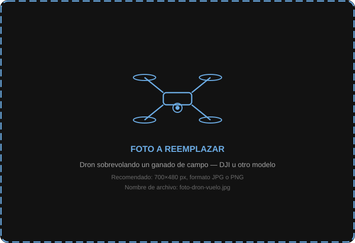

Cuatro pasos, un rodeo conocido
Sobrevolás el lote con el dron
Tomás el dron, lo despegás y sobrevolás el lote en modo manual o automático (grid mission). El único requisito es que el vuelo sea a una altura constante y que el video quede grabado en el dispositivo. No hace falta ningún hardware adicional ni aplicación especial de vuelo.
Alturas recomendadas
Drones compatibles
- Cualquier dron que grabe en MP4, AVI o MOV con resolución mínima de 1080p.
- DJI Mini, Air, Mavic, Phantom — todos compatibles si conocés sensor y focal.
- Autel EVO, Parrot ANAFI y equivalentes.
- Si no sabés el sensor, está en el manual del equipo o en la web del fabricante.

Subís el video con los datos del vuelo
Con el video descargado del dron, abrís la app de escritorio DAG o entrás a la web. Seleccionás el video, completás los datos del vuelo y lo enviás. Eso es todo por tu parte.
Datos que ingresás
- Establecimiento y lote al que pertenece el vuelo.
- Altura de vuelo en metros (del log del dron o telemetría).
- Modelo de cámara o tamaño del sensor (mm) y focal de la lente.
- Fecha y hora (el sistema la lee de los metadatos del video por defecto).
💡 El video podés subirlo en el campo (si tenés señal) o cuando llegás a la casa. El procesamiento corre en los servidores de DAG, no en tu computadora.
La IA procesa el video automáticamente
Una vez que el video llega a los servidores, el pipeline de IA se ejecuta automáticamente. No hace falta hacer nada más. El sistema te avisa cuando termina.
Pipeline de procesamiento
1. Detección
YOLOv8 analiza cada fotograma y detecta todos los bovinos, generando una máscara de segmentación.
2. Tracking
ByteTrack asigna un ID único y rastrea cada animal. Confirma a partir de 15 cuadros consecutivos.
3. GSD y peso
Calcula el GSD con los parámetros de vuelo y estima el área real de cada animal para derivar su peso.
4. Clasificación
Z-score sobre densidad corporal de la tropa: NORMAL, TERNERO, BAJO PESO, SOBREPESO.
5. PDF + video
Genera el PDF del vuelo y el video anotado con IDs y datos de cada animal.
⏱ ¿Cuánto tarda?
Como referencia: un video de 10 minutos en 1080p tarda entre 15 y 30 minutos. Recibís una notificación en la app cuando los resultados están listos.
Chequeás los resultados y tomás decisiones
El dashboard se actualiza automáticamente. Conteo de cabezas, peso promedio, condición corporal, video anotado y PDF. Si hay alertas, aparecen resaltadas de inmediato.
- Si el peso bajó respecto al vuelo anterior, podés compararlo directamente en el gráfico.
- Los BAJO PESO quedan identificados con su ID en el video para ubicarlos en el campo.
- El PDF se puede mandar por WhatsApp o email desde la app.
- Todo el historial queda guardado. Podés comparar con vuelos de meses anteriores.